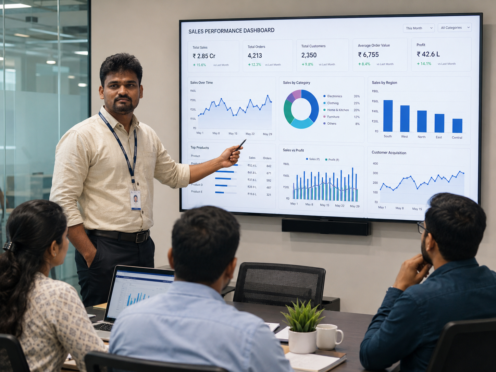
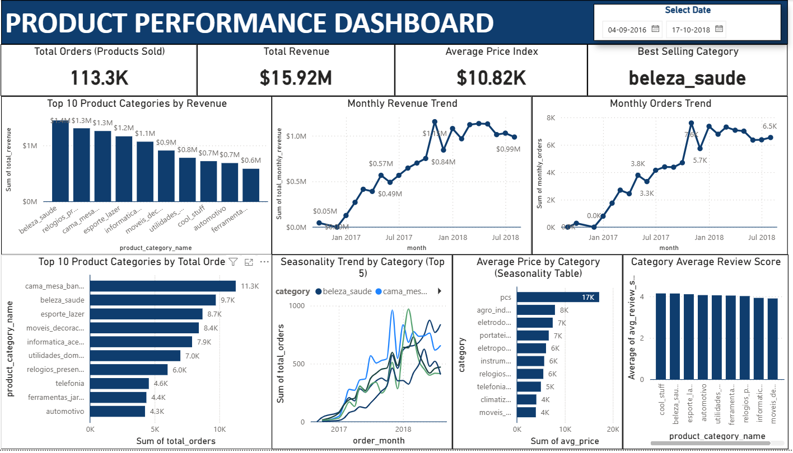
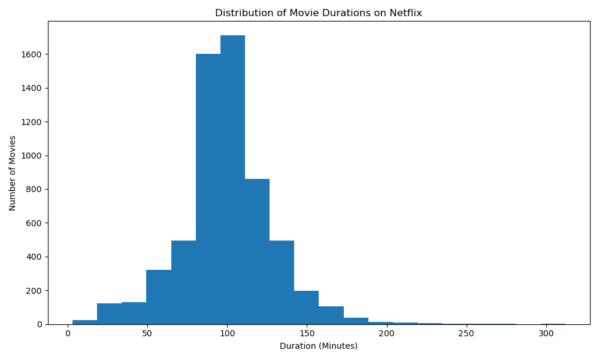
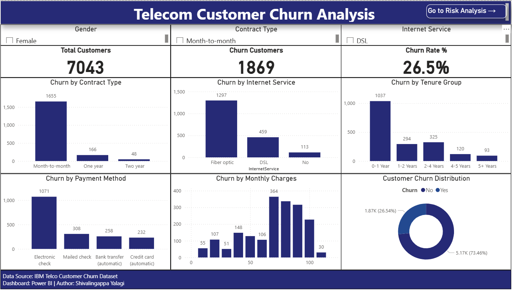
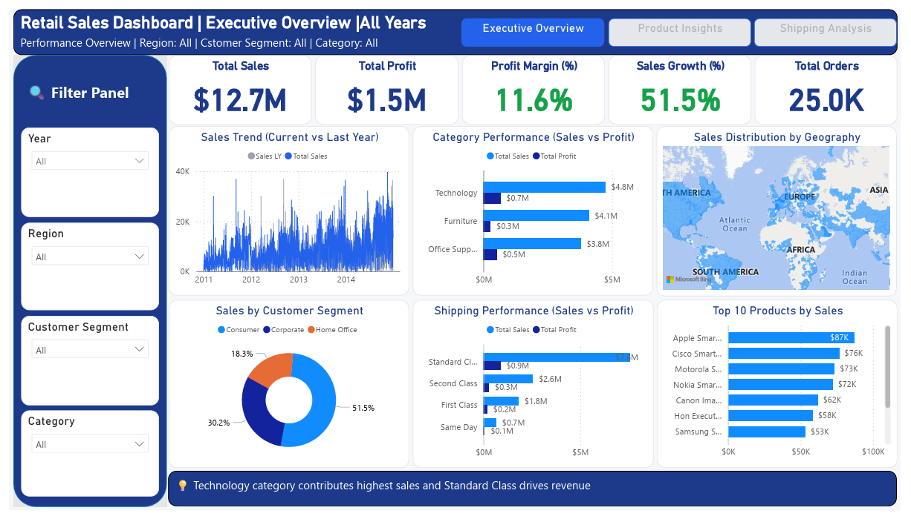

👋 Hello, I'm
Shivalingappa Yalagi
Data Analyst
📍 Bengaluru, KarnatakaSQL | Power BI | Looker Studio | Advanced Excel | Google Sheets
Passionate about transforming raw data into meaningful business insights through SQL, Power BI, Python, Excel, ETL, Dashboard Development, Business Intelligence, and Data Visualization. I enjoy solving real-world business problems using data-driven decision making.
8.7+
Years of Overall Experience
5.1+
Years as Data Analyst
15+
Technical Skills
5+
Analytics Projects
20+
Reports & Dashboards Developed
About Me
A brief overview of my professional journey, technical expertise, and continuous learning in Data Analytics.

Professional Journey
I am Shivalingappa Yalagi, a Data Analyst with 8.7 years of overall experience, including 5.1 years dedicated to Data Analytics. My experience spans IoT-based monitoring, business reporting, dashboard development, ETL, data validation, reporting automation, and Business Intelligence.
I enjoy transforming raw operational data into meaningful insights that improve efficiency, reduce costs, and support data-driven business decisions.
Technical Expertise
My core expertise includes SQL, Power BI, Advanced Excel, Google Sheets, Power Query, ETL, Dashboard Development, Data Cleaning, Data Visualization, Business Intelligence, MySQL, and Python.
I build dashboards, automate reports, perform ETL, analyze large datasets, create KPI reports, and solve real-world business problems using modern analytics tools.
Continuous Learning
I continuously improve my technical expertise by building real-world projects, learning advanced SQL, Power BI, Python, and exploring modern Business Intelligence tools and analytics best practices.
My goal is to combine analytical thinking, technical skills, and business understanding to deliver measurable value and continuously grow as a Data Analyst.
Technical Skills
SQL
Writing complex queries, joins, CTEs, window functions, views, stored procedures and data analysis.
Power BI
Interactive dashboards, DAX, Power Query, KPI reporting and business intelligence solutions.
Python
Pandas, NumPy, Matplotlib, data cleaning, EDA and reporting automation.
Advanced Excel
Pivot Tables, Power Query, Lookup functions, Charts, Dashboards and automation.
MySQL
Database design, data extraction, optimization and relational database management.
ETL & Data Cleaning
Collecting, transforming, validating and preparing raw data for business reporting.
Dashboard Development
Designing visually appealing dashboards that simplify business decision-making.
Google Sheets
Data validation, formulas, reporting, dashboards and collaborative analytics.
Professional Experience
My journey in Data Analytics, Business Intelligence, and IoT-based operational excellence across the dairy industry.
Data Analyst
Stellapps Technologies Pvt. Ltd.
Worked as a Data Analyst supporting IoT-enabled dairy operations by performing ETL, data cleaning, validation, SQL analysis, dashboard development, and KPI reporting. Processed real-time sensor data from over 200+ Bulk Milk Coolers (BMCs) to improve operational efficiency and business decision-making.
Key Responsibilities
- Performed ETL on IoT data from 200+ Bulk Milk Coolers (BMCs).
- Cleaned and standardized datasets by handling duplicates, missing values, and inconsistencies.
- Validated temperature, milk volume, DG, grid power, agitator, and compressor sensor data.
- Performed SQL querying and exploratory data analysis to identify trends and operational issues.
- Built interactive Power BI dashboards and automated daily, weekly, and monthly MIS reports.
- Delivered KPI reports supporting business operations and management decisions.
Tools & Technologies
Key Achievements
20% Cost Reduction
Reduced diesel fuel costs by analyzing fuel consumption patterns and identifying operational inefficiencies.
70% COB Reduction
Reduced milk COB occurrences by monitoring cooling performance and temperature deviations.
Quality Improvement
Improved milk preservation by maintaining consistent chilling temperature at 4°C.
Field Engineer / Consultant Field Engineer
Stellapps Technologies Pvt. Ltd.
Installed, commissioned, configured, and maintained IoT-based monitoring systems across dairy centers under Karnataka Milk Federation (KMF), ensuring reliable data collection and smooth field operations.
Responsibilities
- Installed and commissioned IoT-based data loggers.
- Configured temperature, milk volume, DG, grid power, agitator, and compressor sensors.
- Validated sensor performance and monitored system health.
- Troubleshot field issues and supported preventive maintenance.
- Prepared installation reports and service documentation.
- Coordinated with field teams and KMF stakeholders.
Technologies
Featured Projects

Olist E-commerce SQL Analysis
Analyzed Brazilian e-commerce data to uncover sales trends, customer behavior, payment insights and delivery performance using advanced SQL queries.

Netflix Data Analysis
Performed exploratory data analysis to identify content distribution, genres, release trends and country-wise availability using Python.

Customer Churn Dashboard
Built an interactive dashboard to monitor customer churn, retention, revenue impact and customer segmentation for business decision-making.

Retail Sales Dashboard
Designed an executive dashboard to analyze sales, profitability, regional performance and product categories using Power BI.